Matt Green
Matt Green
Age: Old enough to have two daughters in HS
From: Wauwatosa, WI (I grew up in Peoria, IL)
Program: BIT
Hobbies: Cooking (Grilling, Baking, Brewing)
Favorite book: Amusing Ourselves to Death: Public Discourse in the Age of Show Business by Neil Postman
Favorite film: The Shawshank Redemption
Favorite food: Surf & Turf (Rib eye steak, Lobster cakes and twice baked potatoes)
My motto: You can’t always get what you want
Greatest achievement: Completing Grad school (After almost starting several times)
414-732-9820
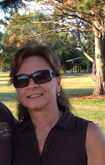Kathleen Brown
Kathleen Brown
Age: Too young to be old !
From: Franksville, WI
Program: BIT
Hobbies: Golfing, working out
Favorite book: Memoirs of a Geisha
Favorite film: Sound of Music
Favorite food: Pizza
My motto: If you can dream it, you can do it
Greatest achievement: Having 2 daughters with degrees !
262-364-9435
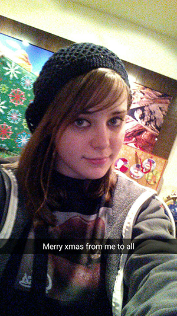Chelsey Wambach
Chelsey Wambach
Age: 22 years old
From: Waukesha, Wisconsin
Program: Web and Digital Media Design
Hobbies: Video Games, Photography
Favorite book: Don't read a lot but last read was The Hunger Games
Favorite film: Edward Scissorhands
Favorite food: Steak, Ponzas
My motto: Work like you dont need the money,
Greatest achievement: Going back to school
1-414-704-1673
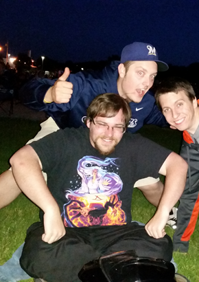Charles Russell
Charles Russell
Age: 27 years old
From: Mukwonago, Wisconsin
Program: Network Specialist
Hobbies: Reading, Computer Security
Favorite book: The Reckoners Trilogy
Favorite film: Current favorite is AntMan
Favorite food: Pot Roast
My motto: There is always something new to learn
Greatest achievement: Helping our school security team place 7th in the nation.
1-262-893-4158
Beth Bryant
Beth Bryant
Age: 21 years old
From: Sussex, Wisconsin
Program: Marketing
Hobbies: Student
Favorite book: Yes, Please by Amy Poehler
Favorite film: : The Wizard of Oz
Favorite food: Mac and Cheese
My motto: : “Blessed Are The Curious For They Shall Have Adventures.”
Greatest achievement: Being able to travel to the places I have and adopting my dog
David Green
David Green
Age: 27 years old
From: Elm Grove, Wisconsin
Program: Web and Software Development
Hobbies: Video Games, and not much else.
Favorite book: The Hitchhiker's Guide to the Galaxy
Favorite film: Rear Window
Favorite food: Baby-Back Ribs
My motto: “The only thing I know for certain is that I know nothing.”
Greatest achievement: I’ll let you know when it happens.
1-414-916-4266
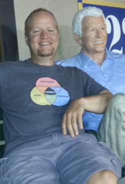Andy Nellen
Andy Nellen
Age: 36 years old
From: Brookfield, WI
Program: Network Specialist
Hobbies: Woodwork, guitars, fishing, tinkering
Favorite book: Animal Farm
Favorite film: Back to the Future
Favorite food: Tacos
My motto: That which doesn’t kill me, only makes me stronger
Greatest achievement: Receiving an invitation to join Phi Theta Kappa honor society
Aaron Gehrt
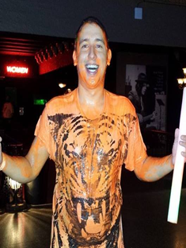
Age: 23 years old
From: Waukesha, Wisconsin
Program: Network Specialist
Hobbies: Computer Games, Building things, adventures
Favorite book: LOTR series, HP
Favorite film: Happy Gilmore, Ace Ventura
Favorite food: Italian Cuisine
My motto: Not all who wander are lost
Greatest achievement: Going Skydiving with a fear of falling, Completing a Spartan Race
1-262-422-2501
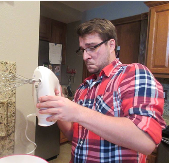Christopher Hampel
Christopher Hampel
Age: 24 years old
From: Wauwatosa, Wisconsin
Program: Marketing
Hobbies: Running, Videogames
Favorite book: The Hitchhikers Guide to the Galaxy
Favorite film: 300
Favorite food: Peanut Butter
My motto: Adapt and overcome
Greatest achievement: Finishing my first 5K run
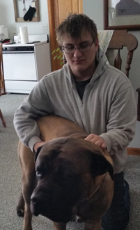Joshua Strait
Joshua Strait
Age: 19
From: Franklin, Wisconsin
Program: Web and Software development
Hobbies: Making models, Solving mental puzzles
Favorite book: War of the Worlds by H.G. Wells
Favorite film: 2001 Space Odyssey
Favorite food: Fried Rice
My motto: Time heals all wounds
Greatest achievement: Solving a Rubik’s cube
1-414-416-0443
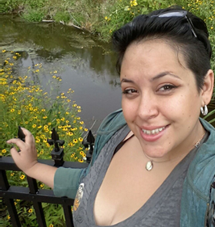Jessica Currey
Jessica Currey
Age: 28 years old
From: Sussex, Wisconsin
Program: IT Network Specialist/Accelerated Pathway
Hobbies: TV Shows, GW2, Cook, Sun Tan, Beach, Research, New Things
Favorite book: Harry Potter
Favorite film: Little Mermaid
Favorite food: Eggs
My motto: I can do this, never give up
Greatest achievement: Attending WCTC
262-364-7001
John Selas
John Selas
Age: 24 years old
From: Brookfield, Wisconsin
Program: Web and Software Developer
Hobbies: Gaming, Comics, Soccer/Football, Cars
Favorite book: Hitchhiker’s Guide to the Galaxy
Favorite film: Snatch
Favorite food: Pizza
My motto: POWER!!!!
Greatest achievement: Beating Cancer
1-414-704-2606
Holly Mercier
Holly Mercier
Age: 50 years young!!!
From: Wisconsin
Profession: Instructor / Teacher
Subjects: Marketing and Business
Favorite book: The Snow Leopard
Favorite film: Harry Potter
Favorite food: Cherry Pie
My motto: You're either 100% alive or 100% dead at any given moment (Meg Gaines)
Greatest achievement: The privilege of serving family and students as my life's work.
Meagan Zellmer
Meagan Zellmer
Age:19
From: Cottage Grove, WI
Profession: Customer Service Representative
Subjects: Accounting, Global Studies, Marketing
Favorite Book: Pride and Prejudice
Favorite Movie: Forrest Gump
Favorite Food: Mac & Cheese
My Motto: "Do not grow old, no matter how long you live. Never cease to stand like curious children before the great mystery into which we were born." -Albert Einstein
Greatest Achievements: Overcoming breaking my back when I was 9 years old and being able to walk again less than 2 years later.
(608)-622-4535
Casey Caravello
Casey Caravello
Age: 21 years old
From: Madison, Wisconsin
Profession: Student/Sales at Menards
Subjects: Medical Administrative Specialist
Favorite book: Paper Towns
Favorite film: Bridesmaids
Favorite food: Ravioli
My motto: Work hard, Play harder
Greatest achievement: The amount of travelng I have been able to do in the last 2 years.
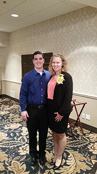Sharilyn Zimmerman
Sharilyn Zimmerman
Age: 21 years old
From: Lake Mills, Wisconsin
Profession/Program: Business Management
Favorite book: Gone With the Wind
Favorite film: Lilo and Stitch
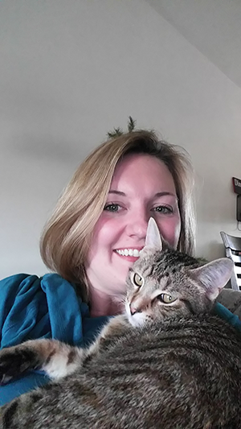Kori Reilly
Kori Reilly
Age: 34
From: Janesville, WI
Program: Finance
Rachel Kopas
Rachel Kopas
Age: 30
From: Watertown, WI
Program: Business Management
Favorite Book: Any book by Kathy Reichs or the Sookie Stackhouse series by Charlaine Harris
Favorite Movie: The Lord of the Rings trilogy
Favorite Food: Soup
My Motto: Get Keep Swimming!
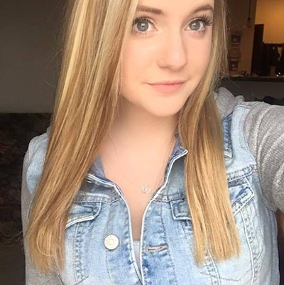Remy Robinson
Remy Robinson
Age: 18
From: Waunakee, WI
Program: Occupational Therapy, Medical Assistancing
Favorite Book: Unknown
Favorite Movie: The Show Cops
Favorite Food: Quasadillas
My Motto: Wanderlust
Greatest Achievements: Ballerina for 4 years
608-334-9351